First trip was to the Czech Republic, and beautiful city of Prague (2013)
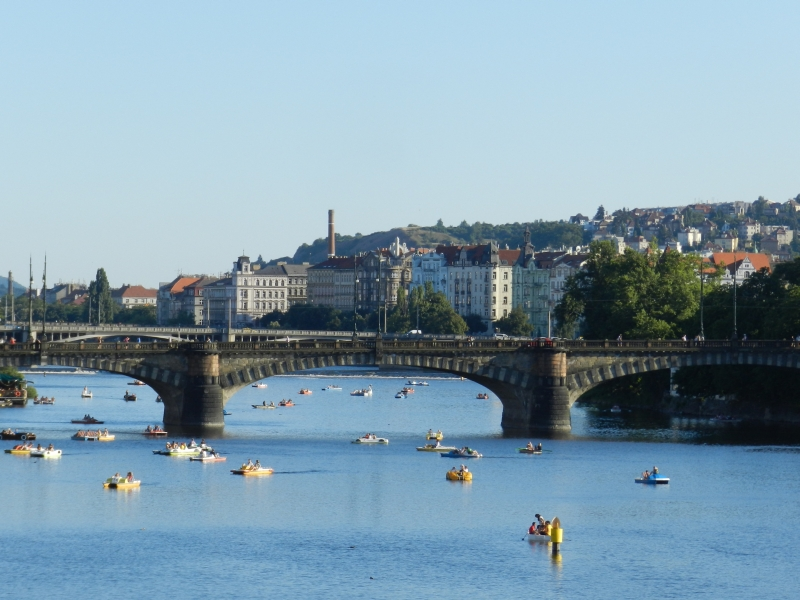Second, was trip to Hungary. Fisherman's palace, over the blue Danube River. (2014)
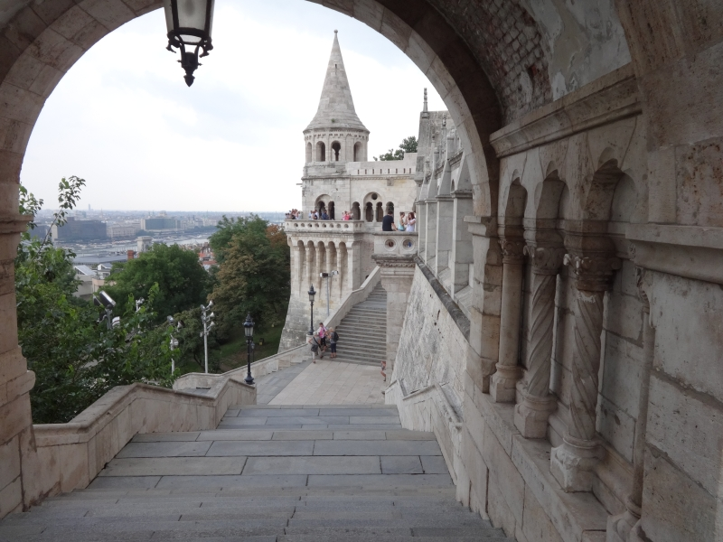After Budapest, in the next few days I found myself in Russia. (2014)
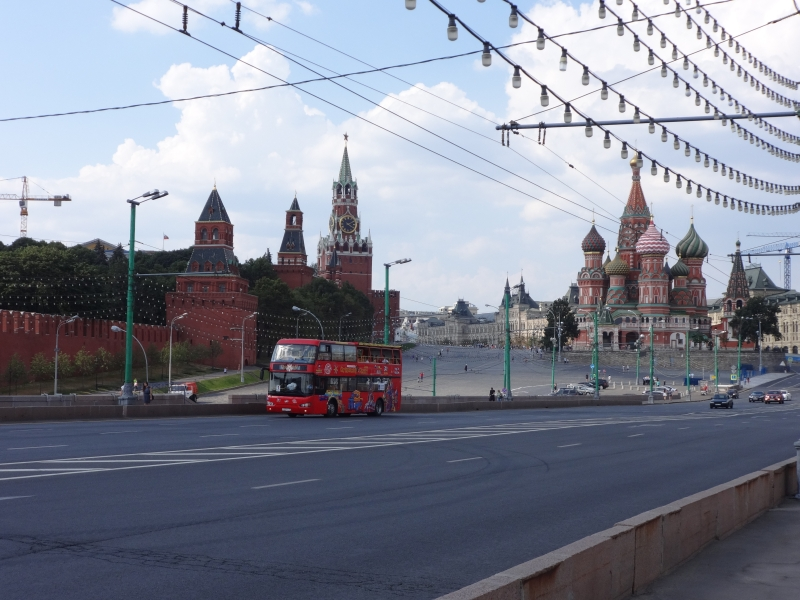Most of my Russian trip, I spent in the nature. Outstanding Lake Baikal! (2014)
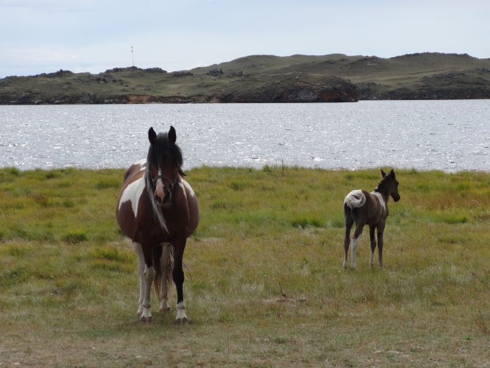I couldn't resist to visit, unknown Mongolia. (2014)
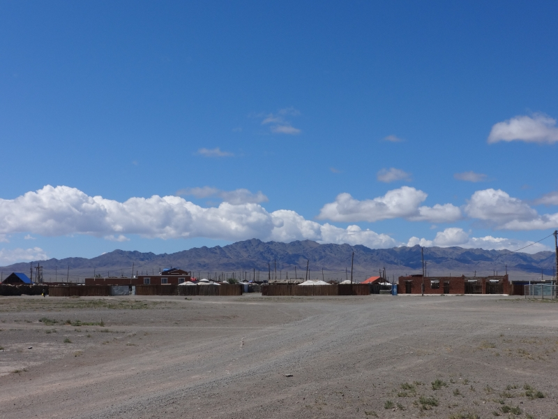Next year, I decided to wander around Central Europe. Vienna (2015)
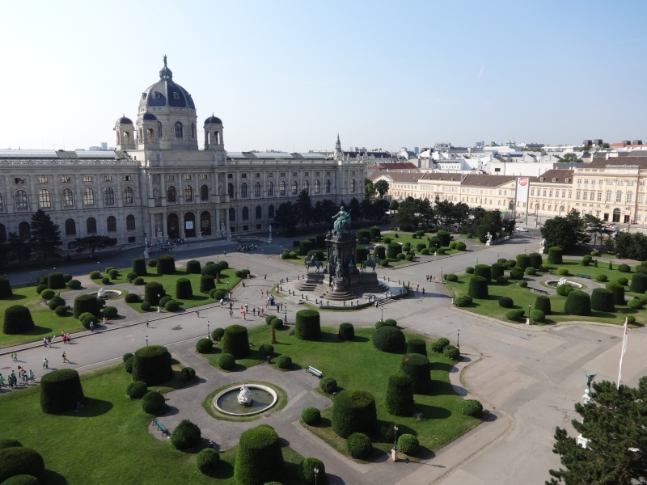By some accident I lost myself in the Ukraine. Kiev (2016)
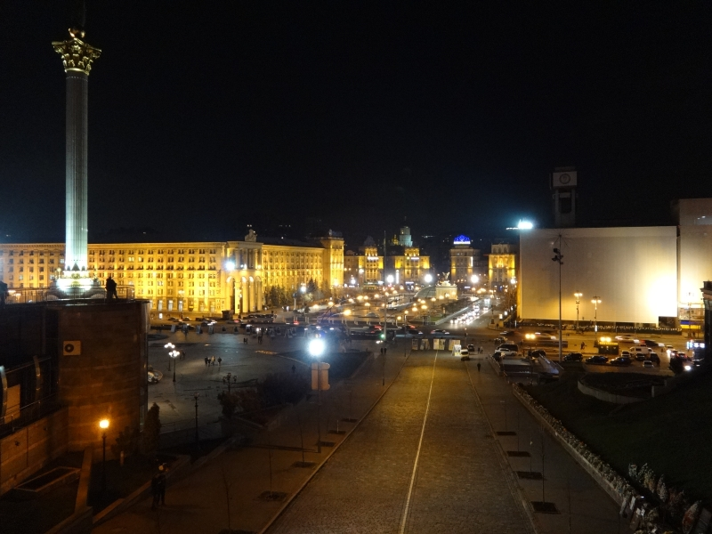After travel, sometimes you need to take a deep breath. Uncle Rade (2017)
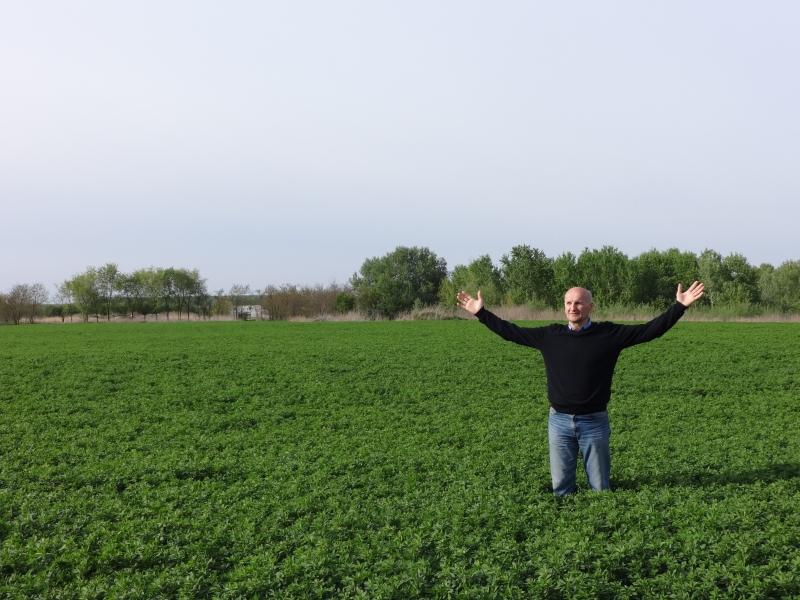Next year, I turn my direction toward West. Madrid (2017)
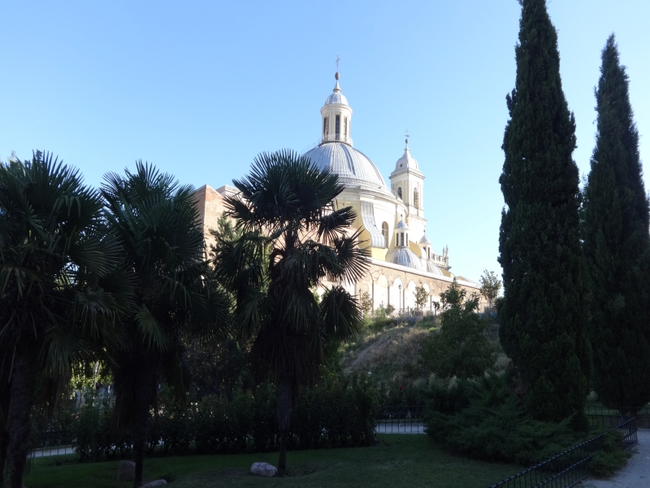And then, crossed the continents. Voila Africa (2017)
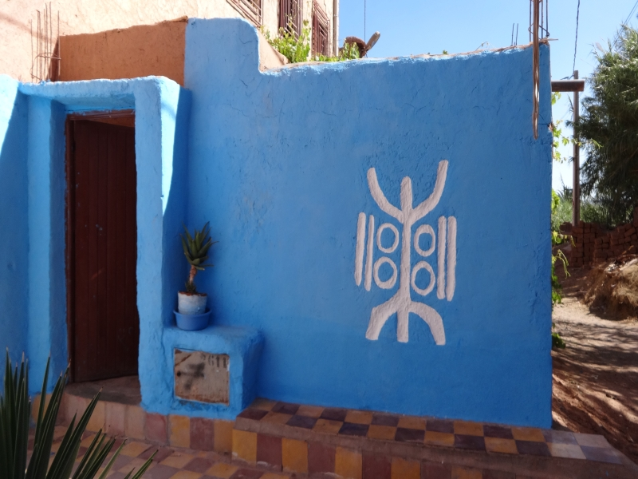I visited old capital Marrakech. (2017)
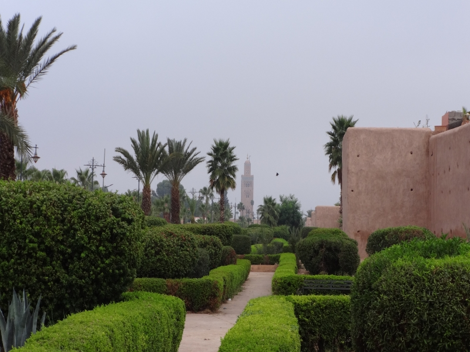And then, crossed the Atlas mountains. Fez (2017)
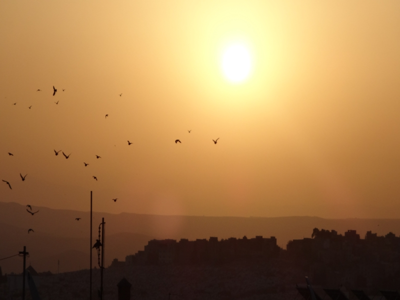But the best was, sailing through the Gibraltar Straits. (2017)
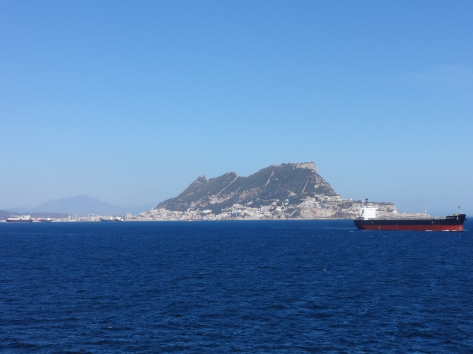Since then I got stuck in the Serbia :) (2017)
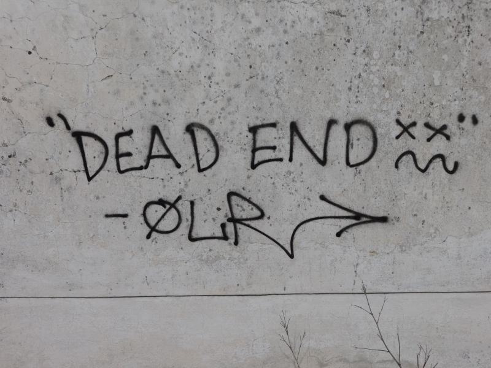